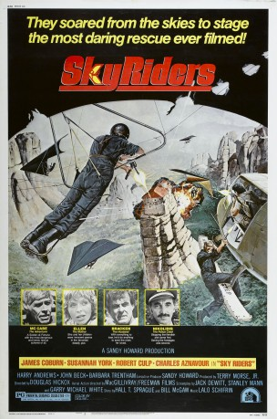

#8945 Auf der Fährte des Adlers
Alternativ: Sky Riders
 
 IMDB-Wertung: 6.0 / 10
IMDB-Wertung: 6.0 / 10  Metascore: 0
Metascore: 0 
Robert Culp plays Bracken, a rich industrialist whose life seems perfect until his wife, Ellen, and their children are kidnapped by terrorists. After failed attempts by the police to capture the terrorists, Ellen's ex husband enters the fray and plans his own rescue attempt. James Coburn plays McCabe, Ellen's ex-husband who hires a crew of professional hang gliders to help him rescue her and the kids from the terrorists' mountain top lair.
Jahr: 1976
Dauer: 90 Minuten
FSK: 12
Land: USA Studio: Twentieth Century FoxTonspuren:
Untertitel:
Auflösung: 1080p (1920x824) Größe: 7833 MB
Genre: Action, Abenteuer
Regisseur: Douglas Hickox
Drehbuch: Jack DeWitt
Soundtrack: Lalo Schifrin
Darsteller:
 James Coburn als Jim McCabe
James Coburn als Jim McCabe Susannah York als Ellen Bracken
Susannah York als Ellen Bracken- Robert Culp als Jonas Bracken
- Charles Aznavour als Inspector Nikolidis
 Harry Andrews als Auerbach
Harry Andrews als Auerbach John Beck als Ben
John Beck als Ben- Zouzou als Female terrorist
- Werner Pochath als Number One Terrorist
- Telis Zotos als Bracken's secretary
 Ernie F. Orsatti als Joe
Ernie F. Orsatti als Joe- Barbara Trentham als Della
- Henry Brown als Martin
- Kenneth Griffith als Wasserman
- Antonis Antypas als Dimitri
- Nikos Tsachiridis als Gatekeeper
- Cherie Latimer als Cora
- Simon Harrison als Jimmy
- Stephany Mathews als Susie
- Steven Keats als Rudy
Datei: X:\1976\Auf der Fährte des Adlers (1976, FSK12, 1920x824).mkv seit 16.05.2018
Festplatte: HD 1971-1979
 Es gibt insgesamt 31 Filme in der Gruppe '1976'
Es gibt insgesamt 31 Filme in der Gruppe '1976'